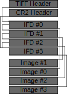

The .CR2 (Canon Raw 2) file format is a TIFF file format used by some Canon digital cameras in order to save the raw sensor data captured by the camera with almost no processing. The RAW data does not contain an image that we can directly see, unlike a JPEG file, but offers way higher quality and precision of image data (12 or 15 bits per color) compared to JPEG (8 bits per color). That increase in quality especially becomes important for post-processing and further work on the image where having just a normal JPEG image can cause problems and lower quality. In order to manage the size of the data a lossless compression is used, whereas JPEG which uses lossy compression.
The basic structure of a CR2 file can de defined as follows: a TIFF header, a CR2 header and 4 pairs of Image File Directories and their respective images:

So CR2 contains a TIFF header at the very start of the file and following that it has its own CR2 header, each having a constant size of 8 bytes. The most important information in these headers can be found in the first 2 bytes in the TIFF header, which either have the value 0x4949 or 0x4d4d which respectively mean that the file is using either little endian or a big endian byte order. The other important information can be found in the last four bytes of the CR2 header that contain the offset from the beginning of the file to the start of IFD#3 in bytes.